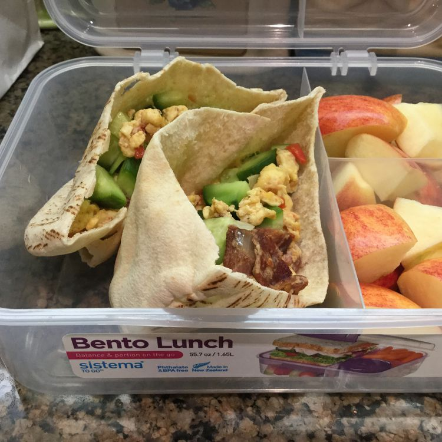

Back to Home
How to make pizza

This breakfast pita pocket is a good substitute for a plain old omelet.
You can use a variety of ingredients; however, I like the all-meat version. Serve with salsa and ketchup.
Ingredients
- 2 links pork sausage
- 2 slices Canadian-style bacon
- 2 slices bacon
- 3 large eggs, beaten
- 1 large pita bread, cut in half
Preparation
- Cook pork sausage, Canadian-style bacon, and bacon in a skillet over medium heat until evenly browned
- Crumble bacon; chop sausage and Canadian-style bacon.
- Crack eggs into the skillet, and cook over medium heat
- Meanwhile, microwave pita bread on high until warm, about 30 seconds.
- ...
To unlock the rest of this recipe, you have to be a subscriber. Join now for only $29,99 per day!